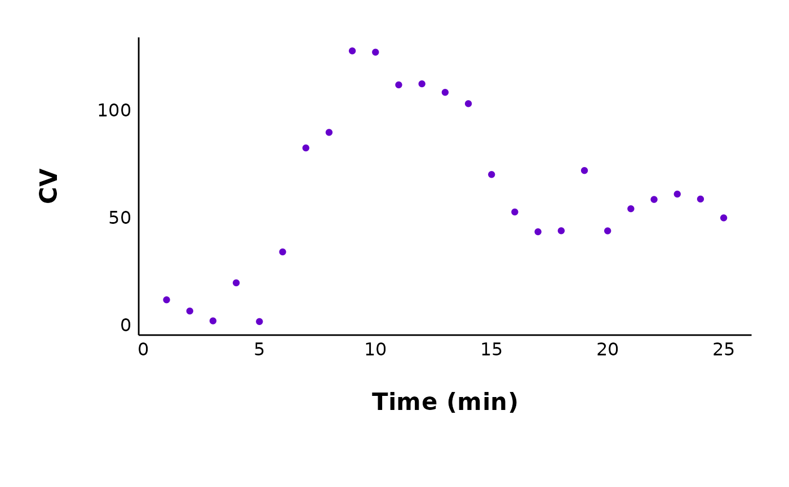

plot_cv_data() enables you to save a plot of the coefficient of variation
in evoked current amplitudes over time.
Usage
plot_cv_data(
data,
plot_treatment = "Control",
treatment_colour_theme,
theme_options,
save_plot_png = "no"
)Arguments
- data
A dataframe of the pruned current data for all cells. This is the third dataframe in the list generated from
make_pruned_EPSC_data().- plot_treatment
A character value specifying the treatment you would like to plot (e.g. "Control").
plot_treatmentrepresents antagonists that were present on the brain slice, or the animals were fasted, etc.- treatment_colour_theme
A dataframe containing treatment names and their associated colours as hex values. See sample_treatment_names_and_colours for an example of what this dataframe should look like.
- theme_options
A dataframe containing theme options. See sample_theme_options for an example of what this dataframe should look like.
- save_plot_png
A character ("yes" or "no"). If "yes", the plot will be saved as a .png using ggsave. The filepath depends on the current type, but they will all go in subfolders below Figures/ in your project directory.
Value
A ggplot object. If save_plot_png == "yes" it will also generate a
.png file in the folder Figures/Evoked-currents/CV relative to the
project directory. The treatment will be included with the filename.
See also
plot_variance_comparison_data() to make plots of inverse
coefficient of variation squared and VMR, which are useful to determine if
a mechanism is pre- or post-synaptic.
Examples
plot_cv_data(
data = sample_pruned_eEPSC_df$all_cells,
plot_treatment = "Control",
theme_options = sample_theme_options,
treatment_colour_theme = sample_treatment_names_and_colours,
save_plot_png = "no"
)
#> Warning: Removed 25 rows containing missing values or values outside the scale range
#> (`geom_point()`).
